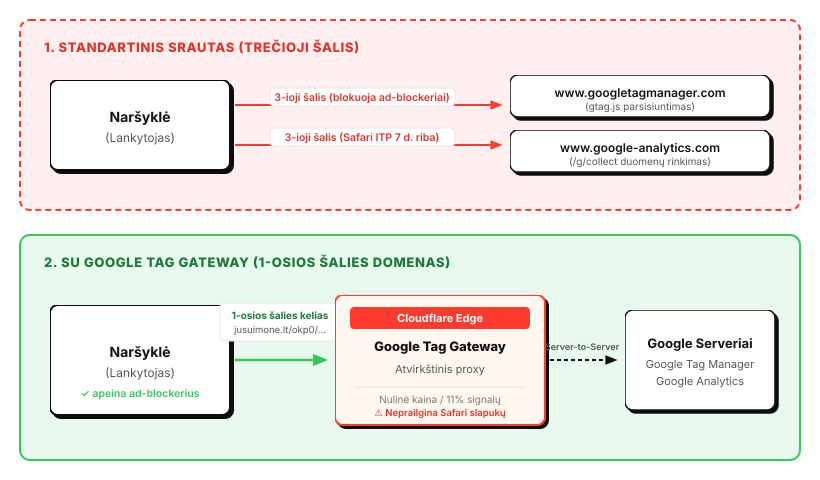

„Google Tag Gateway“ per „Cloudflare“: kam to reikia ir kaip įdiegti per 10 minučių
Pirkėjas su iPhone peržiūri jūsų parduotuvę sekmadienį, o nusprendžia pirkti po aštuonių dienų. „Google Analytics“ ataskaitoje jis jau naujas žmogus, o jo pirkimas įrašytas kaip „Direct“. Reklama, kuri jį atvedė, atrodo nieko neuždirbusi.
Taip nutinka dėl „Safari“. Pagal „Cloudflare Radar“ ataskaitą [1] tai antra pagal dydį naršyklė pasaulyje, todėl jos lankytojai nėra nišinė auditorija. Kiek jų turite jūs, matysite GA4 ataskaitoje Tech → Browsers. Būtent „Safari“ „Apple“ jau kelerius metus riboja sekimą per ITP (Intelligent Tracking Prevention) [2].
Vienas iš būdų tai sumažinti yra „Google Tag Gateway“: nemokama „Cloudflare“ funkcija, kuri „Google“ žymą ir matavimo užklausas perkelia į jūsų pačių domeną. Žemiau paaiškinu, kam to reikia, ką gaunate, kaip tai įdiegti ir kaip patikrinti rezultatą „Safari“ naršyklėje.
1. Kodėl „Safari“ pamiršta jūsų lankytojus
„Google Analytics“ slapukui nustatytas 2 metų galiojimas [12], todėl tikimasi, kad grįžtantis klientas bus atpažintas. „Safari“ šios taisyklės nepaiso:
- JavaScript sukurti slapukai gyvena 7 dienas. Standartinis „Google“ kodas
_gasukuria perdocument.cookie. „Safari“ jį ištrina po 7 dienų be sąveikos su svetaine [3]. - Po reklamos paspaudimo, vos 24 valandos. Jei lankytojas atėjo su
gclidarfbclidparametru, slapukas tame apsilankyme gyvena tik parą [4]. - Saugyklos apeiti nepavyksta.
localStorageirIndexedDBtaip pat išvalomi po 7 dienų [5].
Ataskaitose tai matosi taip: išpūstas „Naujų naudotojų“ skaičius (lojalus pirkėjas per metus gali tapti iki 26 „naujų“ žmonių), pirkimai, priskirti „Direct“ vietoj tikro šaltinio, ir silpnesni signalai „Google Ads“ „Smart Bidding“ algoritmui.
Seniau analitikos įmonės siūlė apėjimą su CNAME subdomenu (analytics.jusuimone.lt). „Apple“ tą
spragą uždarė: „Safari“ aptinka CNAME maskavimą ir nesutampančius IP adresus, o tokių atsakymų slapukus vėl
apriboja iki 7 dienų [6]. Todėl liko vienas kelias, kad žymos ir užklausos iš tiesų taptų jūsų domeno dalimi.
2. Ką duoda „Google Tag Gateway“
Įprastai naršyklė kreipiasi tiesiai į „Google“ domenus, ir būtent juos blokuoja reklamos blokatoriai bei
privatumo naršyklės. Su Gateway „Google“ žyma (gtag.js, GTM) kraunama iš jūsų domeno, o
matavimo užklausos keliauja per jūsų domeną, o „Cloudflare“ jas persiunčia „Google“ [7]. Jums nereikia nei
atskiro serverio, nei subdomeno. „Cloudflare“ klientams tai įjungiama keliais paspaudimais, paslauga
nemokama, o jos užklausos neįskaičiuojamos į kitų „Cloudflare“ produktų naudojimą [8].

Ką tai duoda praktiškai:
- Mažiau prarastų duomenų dėl blokatorių. Užklausos eina į jūsų domeną, o ne į gerai žinomus „Google“ adresus.
- Daugiau signalų. „Cloudflare“ nurodo, kad ankstyvieji testuotojai vidutiniškai matė apie 11 % daugiau duomenų signalų [8] (tai gamintojo duomenys, ne nepriklausomas matavimas).
- Pirmosios šalies kontekstas. Skriptas ir matavimas atkeliauja iš jūsų domeno, o slapukas sukuriamas jūsų domeno vardu [8].
- Nulis papildomų kaštų ir infrastruktūros.
Didžioji „Safari Web Inspector“ iliuzija: jei atsidarysite „Safari“ kūrėjo įrankius (Web Inspector → Storage → Cookies), pamatysite, kad _ga slapuko stulpelyje Expires rodoma data po metų ar dvejų (pvz., 2027 m.). Neapsigaukite: „Web Inspector“ rodo tik tai, kokio termino paprašė pats „Google“ skriptas, o ne kada naršyklė jį ištrins. „WebKit ITP“ variklis nekeičia rodomos datos lentelėje – jis slapuką tyliai išvalo savo vidiniu mechanizmu po 7 dienų be sąveikos su svetaine (arba po 24 valandų, jei atvykta per reklamą) [3].
3. Kaip įdiegti per 10 minučių
Reikia „Cloudflare“ zonos, per kurią eina jūsų svetainė, ir „Google“ žymos ID (G-…,
GT-… arba GTM-…).
- „Cloudflare“ skydelis. Pasirinkite domeną ir eikite į Delivery & Performance → Web tag management → Google Tag Gateway.
- Nustatymai. Įjunkite „Turn on and configure Google tag gateway“,
įveskite žymos ID ir pasirinkite Measurement path: nenaudojamą kelią savo svetainėje
(pvz.,
/okp0,/metricsar/gtg). Atskiro subdomeno ar DNS įrašo kurti nereikia, tai tiesiog vidinis URL kelias jūsų domene. Paspauskite Save. - Svetainės kodas. HTML žymoje nurodykite savo kelią:
<!-- 1. Skripto šaltinis per jūsų domeno kelią --> <script async src="/okp0/gtag/js?id=G-MM3XFZX1JX"></script> <!-- 2. Matavimo užklausos į tą patį kelią --> <script> window.dataLayer = window.dataLayer || []; function gtag(){dataLayer.push(arguments);} gtag('js', new Date()); gtag('config', 'G-MM3XFZX1JX', { transport_url: window.location.origin + '/okp0', first_party_collection: true }); </script>Naudojate „Google Tag Manager“? Skripto adresas analogiškas:
src="/okp0/gtm.js?id=GTM-XXXXXX". - Sutikimas ir „Consent Mode v2“. Gateway nėra būdas apeiti sutikimą (žr. žemiau), todėl
prieš sutikimą visos kategorijos turi būti
denied:gtag('consent', 'default', { 'ad_storage': 'denied', 'analytics_storage': 'denied', 'ad_user_data': 'denied', 'ad_personalization': 'denied', 'wait_for_update': 500 });Žymą kraukite tik po sutikimo. Su slapukų valdymo įrankiu tai atrodo taip:
<script type="text/plain" data-cookiecategory="analytics" async src="/okp0/gtag/js?id=G-MM3XFZX1JX"></script> <script type="text/plain" data-cookiecategory="analytics"> gtag('config', 'G-MM3XFZX1JX', { transport_url: window.location.origin + '/okp0', first_party_collection: true }); </script>Kai lankytojas paspaudžia „Sutinku“, įrankis iškviečia
gtag('consent', 'update', { 'analytics_storage': 'granted' }). Jei sutikimas atšaukiamas,_gair_ga_*slapukai turi būti ištrinami, oanalytics_storagegrąžinamas įdenied[13]. - Kaip įsitikinti, kad užklausos sėkmingai eina per tarpinį serverį:
- Atidarykite naršyklės kūrėjo įrankius (Web Inspector / DevTools) ir pereikite į skiltį Network.
- Filtre įrašykite savo parinktą kelią (pvz.,
/okp0). - Turite matyti, kad skriptas (
/okp0/gtag/js) ir matavimo duomenys (/okp0/g/collect) grąžina statusą 200 OK ir keliauja tiesiai į jūsų domeną. - Atsidarykite „Google Analytics 4“: skiltyje Reports → Realtime iš karto turite matyti savo apsilankymą.
Pastabos, kurios sutaupo valandų: Gateway konfigūruojamas visai „Cloudflare“ zonai ir pakeičia esamą GTM skriptą, todėl būtina teisingai sukonfigūruoti „Consent Mode“ [10]. Per jūsų domeną keliauja tik dalis matavimo užklausų [11], todėl neatsisakykite „Google“ domenų CSP taisyklėse nepasitikrinę realių užklausų DevTools skiltyje Network.
Kur klientai dažniausiai suklysta:
- WAF taisyklė užblokuoja matavimo kelią, ir duomenys tyliai nustoja keliauti;
- pasirenkamas kelias, kuris jau naudojamas svetainėje;
- žyma pakraunama dar prieš sutikimą;
- nepakeista CSP arba GTM ir
gtag.jssumaišyti viename puslapyje.
Gateway nėra sutikimo apėjimas
Dažnas klausimas: „jei viskas eina per mano domeną, ar galiu rinkti duomenis be slapukų pranešimo?“ Ne. Pagal BDAR ir Elektroninių ryšių įstatymo 61 straipsnį nebūtinų slapukų ar kitų identifikatorių saugojimui įrenginyje reikia ankstesnio, informuoto ir aktyvaus sutikimo, nesvarbu, ar tai pirmosios ar trečiosios šalies slapukas. Gateway padeda atkurti duomenų kokybę tų lankytojų, kurie sutiko, o ne apeiti jų valią.
Ar norite deleguoti užduotį mums?
Sukonfigūruosime „Cloudflare“ Gateway, „Consent Mode“ ir patikrinsime rezultatą „Safari“ naršyklėje už jus.
Registruotis4. Kada užtenka Gateway, o kada reikia daugiau
Slapukas, kuris „Safari“ gyvena ilgai, turi būti nustatytas HTTP atsakymo antraštėje
(Set-Cookie) serverio, kuris naršyklei atrodo kaip tikra pirmoji šalis: tas pats
domenas ir ta pati IP adresų aplinka. Praktiškai tai reiškia server-side GTM, pasiekiamą
jūsų pagrindiniame domene, arba savo „Cloudflare Worker“, kuris atsakyme nustato
pirmosios šalies identifikatorių. „Cloudflare“ priima užklausas tais pačiais IP adresais kaip ir jūsų
svetainė, todėl tokia schema nesukelia IP maskavimo įtarimų.
| Sprendimas | Blokatoriai | Kaina ir sudėtingumas | Kam tinka |
|---|---|---|---|
| Klasikinis gtag.js | Lengvai blokuojamas | Nemokamas, paprasčiausias | Kai tikslumas nėra prioritetas |
| Google Tag Gateway (Cloudflare) | Atsparesnis | Nemokamas, keli paspaudimai | Pirmas žingsnis beveik visiems |
Gateway + server-side GTM / Worker su
Set-Cookie |
Atsparesnis | Mokama infrastruktūra, daugiau darbo | Didelė „Safari“ dalis, svarbi atribucija |
Viena pastaba: Gateway nėra saugumo priemonė ir neapsaugo nuo XSS, o IP adresų nuasmeninimą galima kontroliuoti tik server-side sprendimuose. Atliekant poveikio duomenų apsaugai vertinimą (DPIA) tai reikia nurodyti atskirai.
Ką daryti dabar
- Pažiūrėkite savo „Safari“ dalį GA4 Tech → Browsers. Kuo ji didesnė, tuo daugiau duomenų prarandate.
- Įjunkite Gateway pagal 3 skyrių. Tai nemokama ir užtrunka kelias minutes.
- Patikrinkite tarpinį serverį: naršyklės Network skiltyje įsitikinkite, kad užklausos sėkmingai siunčiamos per jūsų nurodytą kelią (statusas 200 OK) ir duomenys pasiekia GA4 Realtime ataskaitą.
- Jei „Safari“ vis tiek ribojama, pereikite prie
Set-Cookiesprendimo (server-side GTM ar Worker).
Šaltiniai
- Cloudflare Radar — Browser Market Share 2025 Q4
- WebKit.org — Intelligent Tracking Prevention 2.1 (7 dienų slapukų riba)
- WebKit.org — Tracking Prevention in WebKit
- WebKit.org — Intelligent Tracking Prevention 2.2 (24 valandų riba nuorodų dekoravimui)
- WebKit.org — Full Third-Party Cookie Blocking and More
- WebKit.org — CNAME Cloaking and Bounce Tracking Defense
- Cloudflare Docs — Google tag gateway for advertisers
- Cloudflare Blog — First-party tags in seconds: Cloudflare integrates Google tag gateway for advertisers
- Google for Developers — Google tag gateway for advertisers
- Google Tag Manager Help — Set up Google tag gateway for advertisers with Cloudflare
- Google for Developers — Set up Google tag gateway for advertisers
- Google Analytics Help — Cookie usage on websites
- Google for Developers — Consent Mode